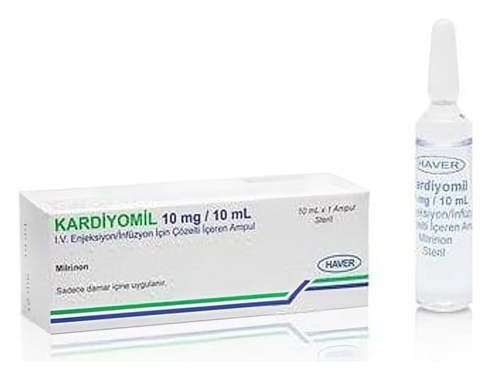

Kardiyomil 10 mg/10 ml IV Enjeksiyon/İnfüzyon İçin Çözelti İçeren Ampul ,1 Adet

Ne için kullanılır
KT · Bölüm 1KARDİYOMİL, berrak, soluk sarı - renksiz, steril, apirojen çözelti içeren renksiz cam ampul içerisinde damar içine uygulanan ve bazı kalp hastalıklarının tedavisinde kullanılan bir ilaçtır. KARDİYOMİL, bir kutuda 1 adet, 10 ml çözelti içeren renksiz cam ampul bulunan ambalajlarda sunulmaktadır. KARDİYOMİL aşağıdaki durumlarda kullanılabilir:
- Klasik tedaviye yanıt vermeyen şiddetli konjestif kalp yetmezliğinin (kalbin vücudun ihtiyacı kadar kan pompalayamaması) kısa süreli tedavisinde, - Kalp cerrahisi sonrası düşük çıkış (out put) durumlarını da içeren akut kalp yetmezliği olan hastaların tedavisinde kullanılır.
KARDİYOMİL çocuklarda aşağıdaki durumlarda kullanılabilir: -Diğer ilaçlar ile sonuç elde edilemediği durumlarda ,şiddetli konjestif kalp yetmezliğinin (kalbin vücudun ihiyacı kadar kan pompalayamaması) kısa süreli tedavisinde ( 35 saat kadar ) -Kalp cerrahisi sonrası akut kalp yetmezliği olan hastaların kısa süreli tedavisinde (35 saate kadar) örneğin kalbin vücuda kan pompalamasında sorun olduğu durumlarda.